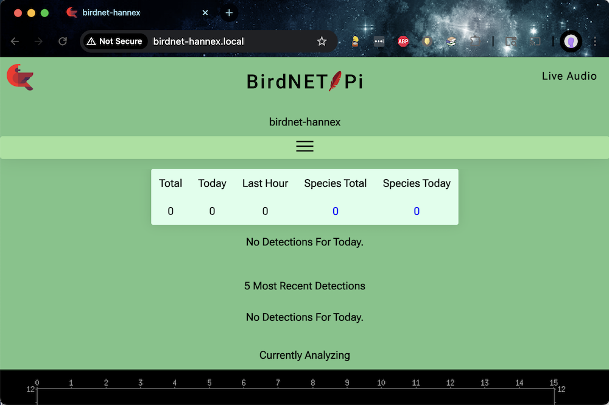

The goal of these instructions is to make it trivially easy to get a
new BirdNET-Pi installation up and running on a Raspberry Pi Zero 2 W.
The instructions are intentionally verbose, written for folks who use
computers but don’t consider themselves programmers, and anyone who has
never worked with a Raspberry Pi before. If you fit this description but
find that the instructions fall short, please let me know!
While it may look like there’s a lot here, it is a straight-forward
“a lot,” without implicit steps that require leaving this page. Don’t be
nervous—you’ve got this!
Also: I ran this setup from my personal computer, which happens to be
a Mac. If you’re on a Windows machine the screenshots might not exactly
match what you see, but the steps are the same.
Task 0: Acquire components
Here are the items you’ll need, with prices at time of writing:
The power adapter will connect to a micro USB port
on the Pi; if you buy a different adapter than this one, double-check
the plug or get an adapter for it.
You could alternatively use a rechargable power brick instead of a
wall wart, although you’d have to remember to charge it (and wouldn’t be
detect birds during recharging…).
You could probably get away with less memory, but don’t skimp and
get an off-brand card; this is the component that actually matters.1
Access to an SD card writer [ MicroCenter,
$18 ], if there isn’t one already built into your computer.
The step that requires an SD card writer is relatively brief and
first on the list, so you could easily get away with borrowing a
friend’s rather than buying your own—especially if you set up a
BirdNET-Pi for them while you’re at it!
Total cost: ~$60, not including the SD card writer.
Task 1: Initial
Raspberry Pi Zero 2 W set up
In this task, we’ll install an operating system (OS) on the Raspberry
Pi Zero 2 W, by loading it onto the microSD card.
Plug the SD card writer into your computer, and put the microSD
card into it.
Install the Raspberry Pi Imager application on your computer, by
selecting the correct “Download for Windows/macOS” option on this page:
Raspberry Pi
Imager
Open the Raspberry Pi Imager application, and make the following
selections:
Raspberry Pi Device: Raspberry Pi Zero 2 W
Operating System: Raspberry Pi OS Lite (64-bit), “A
port of Debian Bookworm with no desktop environment”.
This option may be nested under the “Raspberry Pi OS (other)” folder
and require a little bit of searching.
Storage: Generic - SD/MicroSD Media, which is the
microSD card that’s currently in the writer
Your resultant selection screen should look like this:
…select NEXT!
You’ll be prompted to optionally “Apply OS customization
settings?” Select EDIT SETTINGS
and then on the following page, set:
Hostname:
birdnet-<pi_identifier>,
This will be the name of the Raspberry Pi, e.g.,
birdnet-foo, birdnet-backyard,
birdnet-007, whatever! The identifier I chose in these
screenshots is hannex, such that my full hostname is
birdnet-hannex.
Make it something unique enough that if you set up multiple
birdnets, you’ll be able to keep them separate. I typically use the
initials of the recipient.
Note that the angle brackets (“<”, “>”) here and elsewhere
in this tutorial should not be included in your chosen
<pi_identifier>; they are simply convention used to
indicate the user-specific parts of variables.
Username and password:
<pi_username> /
<pi_password>
This will be the username and password for the Raspberry Pi. I use
birbwatcher as the username for all of mine, so that’s what
you’ll see in my screenshots. Make sure to write these values down
somewhere, as you’ll need them whenever you want to log into your
Pi!
Important note 1: This must be the Wi-Fi network name (“SSID”) and
password for the Wi-Fi network your computer is currently
using, and that you’ll be using for the rest of the Pi setup. If
you’re setting this device up for someone else, there’ll be a separate
step to additionally add their Wi-Fi network info later; for
now, this should be yours.
Important note 2: If you have a 5 GHz option network (e.g.,
MyFunWifiNetwork and MyFunWifiNetwork_5G, do
NOT use the 5G one! At time of writing, Raspberry Pi Zero 2 W’s do not
support it.)
Make sure the time zone is correct for wherever your BirdNET-Pi will
be installed.
Under the SERVICES tab, confirm that
enable SSH and use password authentication are
both selected—they likely already are, by default.
…select SAVE!
You’ll be reprompted to “Apply OS customization settings?” This
time select YES. You might get a scary looking message
asking you to confirm that any existing data on the card will be
overwritten; select YES to continue. If prompted for a
password, use the password for the computer you’re running the
configuration from—not any of the passwords we’ve now set for the
Pi.
The Raspberry Pi Imager will now proceed to write the operating
system and configuration settings to your microSD card! It may take a
few minutes, but the progress bar will tell you when its done, and the
microSD card will be automatically disconnected from your computer
(“ejected”) once the writing is complete. At that point it will be safe
to remove the card from the writer.
Remove the microSD card from the writer and put it into the
microSD card slot in the Raspberry Pi 2 Zero W.
Connect the power cable to one of the Pi’s micro USB ports, and
plug its other end into the wall. Once powered, the Pi will turn on
automatically; you’ll know the Pi is on because a green light will start
flashing on the Pi. This may take a few moments.
Congratulations, you’ve now installed the operating system on your
Pi! When the Pi boots up, it will automatically use the Wi-Fi
credentials you provided to connect to your wireless network. We can—and
will!—do the rest of the setup wirelessly.
Task 2: SSH time—talk to the
Pi
In this task, we’ll “SSH onto the Pi”, i.e., send commands to it from
another computer. It is barely worthy of its own section in this
tutorial, but giving it one should make it easier to find again when
your future self inevitably forgets the single command. :D
Why do we do this? In the previous task we chose the “Lite” operating
system for our Pi, which means we configured the Pi to run in “headless”
mode—i.e., without a dedicated monitor, keyboard, or mouse. To interact
with the Pi in the absence of those peripherals, we connect to it
remotely over a wireless network, using a communication protocol called
the Secure Shell
Protocol (SSH).
Once your Pi is powered on, as long as your personal computer
is on the same Wi-Fi network you configured the Pi to connect
to you’ll be able to SSH onto it from your personal computer.
(I’ve put that bit in bold because it is mission critical!)
When a step says “run”, that means to type or copy the given text
into the terminal and then hit the Enter or
Return key.
SSH onto the device: on your personal computer, open up a
terminal application. If you’re on a Mac, this is literally called
Terminal; on Windows it’s called Windows
Terminal. Run
ssh <pi_username>@birdnet-<pi_identifier>.local
To SSH onto the device I configured in the earlier screenshots, I do
ssh birbwatcher@birdnet-hannex.local:
If prompted to continue connecting, type yes and hit
enter.
If you just hit enter without typing yes,
you will not be connected, and it might get confusing. Try step 1 again,
and this time type yes at the prompt!
When prompted for a password, type the
<pi_password> from above (without the angle
brackets!!) and hit enter.
…that’s it, you’re on! Any commands you type into this terminal
window will now be running on your Raspberry Pi. üòÆ If you want
to close the SSH connection? Simply type exit and hit
enter, or close the terminal’s application window by
clicking on the X in the corner of the window.
If your SSH connection drops at any time—your internet chokes, you
decide it’s bedtime and want to finish another day, you accidentally
close your terminal window, you intentionally close your terminal
window—simply SSH back on again.
Click for more details on understanding to which machine
you’re sending terminal commands
In the terminal window, how can you tell which machine you’re
sending commands to? How can you tell if your SSH connection is running
or has dropped?
Look at the start of each line: when you’re on the Pi, the
“prompt”—the default text at the start of a line in your terminal—will
be <pi_username>@birdnet-<pi_identifier>. When
you’re on your personal machine, it will be something else—probably the
name of your computer unless you’ve customized it to look different.
In this screenshot, my local prompt is the path to my working
directory (“~”) in a blue arrow, while the prompt on the Pi is the white
birdnet-hannex:~/BirdNET-Pi$. The text styling will likely
be different in your terminal, but the concept is the same.
You can try out typing the same series of prompts as I did in this
screenshot—anything on the blue or white lines—and you should see
similar if not identical responses on your machines.
Task 3: BirdNET-Pi
application installation
Okay. You’ve set up the Pi, you’ve ssh’d onto the Pi—it’s time to add
the “BirdNET” part of BirdNET-Pi!
In this task, we’ll download and run the installer for the BirdNET-Pi
application and then change some of the Pi’s configuration for storage
limits, restart behavior, and logging. Some of the following is going to
seem a little silly, but it works. ¯\_(ツ)_/¯ Bear with me!
If you’re prompted for a password at any point in this task, use
the <pi_password> you set previously.
In your remote terminal—that is, a terminal window in which
you’ve SSH’d onto your Pi—run
sudo nano /etc/rc.local
This will create a new file at path /etc/rc.local and
open it in a program called nano, which is a text
editor that runs in the terminal.
Using your arrow keys and keyboard as with a regular text editor,
Edit the file so its contents are exactly as follows:
#!/bin/sh -e
iw wlan0 set power_save off
exit 0
To do this you can either type these contents in manually, or copy
and paste the contents using ctrl+c/ctrl+v
commands, as with any other text editor.
To exit this file, press ctrl and x at the
same time; then y to save the modifications, then
enter to select the path you originally opened as the save
path. You will then be returned back to your command prompt.
Want to confirm that you wrote and saved the correct content to
this file? Run
cat /etc/rc.local
to display the file contents in the terminal. If the displayed
content matches the text above, you’re good to go—if it doesn’t, simply
do sudo nano /etc/rc.local to reopen the file in your
editor and try again!
To make the file you just created executable, i.e., to enable the
computer to run it, run
sudo chmod u+x /etc/rc.local
in the terminal.
To update the Pi’s swap space limits, run
sudo nano /etc/dphys-swapfile
to open the file /etc/dphys-swapfile in nano.
Use the down arrow to scroll through the file to the line that
says CONF_SWAPSIZE=512 and edit it to be
CONF_SWAPSIZE=2048
Scroll down to the line that reads
#CONF_MAXSWAP=2048 and edit it to be
CONF_MAXSWAP=4096 (Note the lack of # at the
beginning of the line!!).
Your resultant file should look like this:
A # at the start of the line means that the line is
commented out—which means that the changes on that line will be ignored.
We do not want them to be ignored, hence deleting the relevant
#!
To save the changes, press ctrl and x
together, then y, followed by enter; once
again you’ll be returned to the terminal.
In the terminal, run sudo reboot. This will cause
the Pi to—you guessed it—reboot, which will automatically close your SSH
connection.
Wait for a moment or two for the Pi to reboot, then SSH back onto
it:
ssh <pi_username>@birdnet-<pi_identifier>.local
(Look familiar? :) )
Okay, this is the bit that is going to feel silly. Just go with
it. In your remote terminal, start the BirdNET-Pi installation script by
running
A bunch of text will print out to the screen, as various files and
dependencies are copied onto the Pi. You don’t have to pay attention to
that text—you just have to wait and wait, until the installation
fails. This may take a long time, on the order of tens of
minutes.
That’s right: eventually, the installation script you just
ran will fail(!) with a “No space left on device” error. That’s
expected! You want it to happen!2
Okay, let’s fix the out-of-space error. Run the following:
sudo mount -o remount,size=5G /tmp/
Now re-run the installation step, first deleting the failed
installation directory:
This step is slow, as lots of things happen during installation. Be
patient!
This time the installation script should succeed. You’ll know it has
succeeded because the Pi will reboot, which will close your SSH
connection.
If it does NOT succeed, i.e., you still get a failure message when
you run that curl command, repeat the commands in this
step. Try this a couple times before giving up and emailing me that my
instructions did not work for you!3
SSH back on to your Pi again! I bet you remember the command this
time.
You can also probably use the up-arrows in your terminal to page
back through the previous terminal command history, which at this point
definitely contains your SSH command! You can hit enter on
any item in the command history to rerun it.
Now edit the amount of storage space the system logs are allowed
to use: run
sudo nano /etc/systemd/journald.conf
which will dump you into yet another file in your text editor!
Use the arrow keys to scroll down to the line that says
#SystemMaxUse= and remove the # to change the
line to be SystemMaxUse=200M
and then save the file: ctrl+x , Y,
enter. You’re now a pro at this in-terminal text editor
stuff!
Restart the logging with those new settings by running
sudo systemctl restart systemd-journald
Congrats! You‚Äôve now installed the BirdNET-Pi application! ü궂Ä炨õ The
finicky part is over.
Task 4: Configure
the BirdNET-Pi application
The BirdNET-Pi application consists of two components: a
classification pipeline that constantly analyzes recorded audio for bird
sounds, and a small web server that hosts a website that visualizes
those detections. The website also lets users (you!) configure the
application’s various settings. That’s what we’ll be doing in this
task.
For the following steps, use whatever browser on your computer you
prefer—Chrome, Firefox, whatever. Note that the BirdNET-Pi website will
be slow to load and respond, which is to be expected: remember that it
is being run on your Raspberry Pi! Have patience, and don’t
click around excessively in frustration if things are moving more slowly
than you’d like—that’ll just make things worse.
In your browser of choice, go to the website
http://birdnet-<pi_identifier>.local/
For my installation, that’s
http://birdnet-hannex.local/.
This URL will only succeed (i.e. the page will load) if you are
visiting it from a machine on the same Wi-Fi network that your Pi is
currently connected to!
You should see something like this:

In the future, once you’ve detected some birds, this same page will
look more like this:
Select the Tools tab. (You may need to make your
browser window wider or click the button with the horizontal black lines
to make the toolbar visible.) When prompted for a username and password,
use birdnet as the username and leave the password
empty.
These are the default credentials of the BirdNET-Pi
application, as defined in the installation script we just ran,
rather than any of the credentials we configured previously for the Pi
itself. If you want to change this default, you can do that on the
Settings page. (I haven’t bothered to change mine yet, because I trust
the folks who have access to my Wi-Fi network to not mess with my
BirdNET-Pi settings.)
In Tools > Services:
Click Disable in
Live Audio Stream.
This step optional—you could leave it enabled. I disable
mine for two reasons:
I don’t want the ability to hear the recorded audio stream live, so
it is a waste of compute power to leave it on and possibly slow
everything else down; and
This “feature” makes it too easy to accidentally wander into a
privacy violation.
Click Disable in
Streamlit Statistics.
This service the Species Stats tab, which is unusably slow on the
Raspberry Pi Zero. Might as well turn it off, since we can’t use
it!
For both these services, be sure to select Disable
instead of Stop; the former will persist after reboot, the
latter will only halt the service until reboot. It might take a
Note that it may take a few seconds to a minute for each setting to
update after being clicked; that’s to be expected! Your Pi is working
very hard to analyze birds and handle website requests at the same time!
Have patience. If you’re taken to a different screen with a black
terminal on it, just go back to Tools > Services to
confirm that those services are now disabled. It should look like this
once complete:
In Tools > Settings, update latitude and
longitude to that of your planned installation location, then select
Update settings.
You can use this site or in
Google Maps, right click on a location to see its latitude and
longitude:
In Tools > Settings > Advanced Settings—found
at the bottom of the basic Tools > Settings
page—set:
Privacy threshold to
1%;
Recording Length to
30
then select Update settings. It might take awhile for
the advanced settings page to open; again, have patience.
Task 5
(Optional): Install Tailscale for remote monitoring
If you’re gifting this BirdNET-Pi to someone else who wants you to
act as tech support for their installation, or you want to be able to
check on your own installation while you’re not connected to your home
Wi-Fi network, you can add your Pi to a Tailscale network—basically, it acts
as a virtual private network for your various devices.
Click to see instructions
Sign up
for a Tailscale account, if you don’t already have one.
You do not need to do anything other than choose (or make) an account
to sign in with. You don’t need to bother following their steps to “add
a first device” unless you want to, you can do it later.
In your terminal, SSH onto the Pi and install Tailscale by
running
(If prompted, type Y and enter to confirm
installation.)
To connect your Pi to your Tailscale network, run
sudo tailscale up
This will result in a prompt with a URL link to click. Follow that
link by command-clicking it or pasting it into your
browser! It will ask you to agree to connect this new device to your
Tailscale network; follow through with whatever verification steps it
asks you to do.
Note that if you want to connect the device to someone
else’s Tailscale network, you’ll need to send them the
generated URL and have them authorize it with their own Tailscale
account.
If you won’t have easy access to the device in the future,
consider setting ... > Disable key expiry on that Pi in
the Tailscale web console.
Optional: If this is your first time using Tailscale, you’ll need
to additionally install it on whatever device you plan to use to access
the BirdNET-Pi—e.g., I have it installed on both my personal computer
and my phone. Steps for these different devices are available in their
documentation.
Now, from any device on your Tailscale network, you can SSH onto
your Pi through that network, and no longer need to be on the same
wireless network! Try this by opening a new Terminal window and
running
ssh <pi_username>@birdnet-<pi_identifier>
Note the lack of .local at the end of the host name!
E.g. over Tailscale I now do ssh birbwatcher@birdnet-hannex
instead of ssh birbwatcher@birdnet-hannex.local.
Similarly, you can view the Pi’s website via your Tailscale
network, so that you no longer have to be on the same wireless network
as the Pi! You’ll still need to do this from a machine that is part of
your Tailscale network—this url won’t work from a machine that isn’t,
i.e., you can’t just give the URL to a friend and expect it to work.
Find the Pi’s URL in your Tailscale console. E.g., for my device, the
console shows its address as
so I access mine at
http://birdnet-hannex.feist-matrix.ts.net/. If you go to
that address, you will not be able to see anything—because you are not
part of my Tailscale network.
That’s it!
While SSH’d onto the Pi, you can do sudo tailscale down
to disconnect it from the VPN, or sudo tailscale up to
reconnect. (tailscale status will tell you whether you are
currently connected or not.)
If you are giving the Pi to someone else, and only want it to be
available on your Tailscale network when they specifically enables
it—and they are willing and able to interact with a terminal
themselves!—you can sudo tailscale down for now, and then
give them instructions to SSH on and do a sudo tailscale up
when needed.
Task 6
(Optional): Support additional Wi-Fi networks
TODO-HERE
There may be multiple Wi-Fi networks to which you want the Pi to
auto-connect when in range. For example, when I set up a BirdNET-Pi for
someone else, I want it to recognize my home network—during setup, and
for quality checking before I send it off!—as well as the network of the
home I’m sending it to. Perhaps you additionally want to allow your Pi
to connect to your phone’s hotspot, so that you can take it with you on
various outdoor adventures?45
Click to see instructions
For each additional network you want to add, paste the following:
Reload the configuration:
sudo nmcli connection reload
…that’s it! You can check to see what networks are now set up
with
nmcli connection show
which will show a list of all the networks you’ve configured. To look
at the specifics of a specific network you’ve set up, do
nmcli connection show "wifi-<NETWORK-NAME>"
Task 7: Physical installation
TODO-HERE
Time to stick that microphone out a window!
While you could just unplug your Pi, it’s safer for the Pi
(less chance of something going wrong!) to intentionally power it down
first. While SSH’d onto the Pi, do sudo shutdown.6
Now go find a window and stick your microphone out it! I’ve included
some photos of my own setup as inspiration. Once the microphone can
access the great outoors (presumably, somewhere where you’ve heard at
least one bird recently!), plug it into the remaining micro-USB port on
the Pi. Plug the Pi into whatever outlet is accessible, and wait!
In your choice of microphone location, be mindful of whether anything
will get wet if it rains (bad!), especially if that thing is the Pi
(very very bad! do not do this). As an example, here is what my
installation looks like:
My exceptionally professional looking setup. Note the piece of white
tape for sticking the Pi to the wall, and the piece of black tape, for
covering up the Pi’s bright green light, which otherwise is annoyingly
bright at night.
A view of the microphone, and also of my exceedingly dirty inner window
frame. I was so horrified by this photo that I considered cleaning it
out and taking a new photo. As you can see, I did not do that. Also, I
just slide the window shut over top of the wire; the window isn’t so
snug that it is a problem. We did a similarly half-assed installation
out of my parents’ window, which was also sufficient for bird detection!
Once powered, the analysis service and web server will start right
away, and the Pi will autoconnect to the Wi-Fi network that you
configured it for, which means that you will be able to see what it’s
doing via foo.local on another device (phone, laptop) as
long as that device is on the same Wi-Fi network.
Once your BirdNET-Pi is up and running, anyone connected to your home
Wi-Fi network can view the latest birds at
birdnet-foo.local. Anyone connected to your tailscale
network can see the same via birdnet-foo.TODO.
Click around to explore what’s visible to you; note that the TODO and
TODO tabs won’t show anything, since we disabled those services (above).
Until you’ve detected a few birds, the app will seem pretty boring and
janky, but leave the microphone plugged in for a bit and then recheck
it! The page may be a bit slow to load—remember that this site is being
served entirely from that little Raspberry Pi Zero you just set up, and
in addition to making the website you’re trying to view, it is also
constantly recording and analyzing sound. It’s doing the best it
can.
Daily usage
To view the website being broadcast by your Pi,
http://birdnet-foo.local. To access this site, you’ll need to be on the
same Wi-Fi network that your Pi is connected to.
If you did the optional Tailscale installation, you can additionally
view your site at http://birdnet-foo..ts.net/.
Optional niceties:
Put up a sign in your home with a link to the site, to show visitors
how to connect to your Wi-Fi and then view your birds
If you have an old display of some sort, you can set up a
semi-permanent viewing station. My parents mounted an old iPad near the
window with the BirdNET installation, and set its default landing page
to view your BirdNET-Pi detections.7
The BirdNet-Pi application’s website, displayed on the semi-permanent
viewing station my parents set up on an old iPad.
System administration
details
Your BirdNET-Pi is now running! Awesome! Congrats! Uh…what if
something goes wrong?
If your power goes out, or your Wi-Fi router resets, the Pi will
automatically reconnect and start back up.
If your Pi is unable to connect to the Wi-Fi for whatever reason,
BirdNET will continue to run its detection and analysis; you just won’t
be able to connect to it (i.e., see the website for your installation)
until the Pi has connected to the Wi-Fi again.
If your internet is out but your Wi-Fi router is still running,
you’ll still be able to see your Pi’s website
If you are unable to load your Pi’s website from another device,
check the following (in roughly this order):
Is the Pi plugged into power? Is the green light on it flashing (to
indicate that it is powered)?
Is the Pi able to access the wireless network it was configured to
run on? i.e., is that network accessible and can you connect to it with
another device (i.e., your phone, a laptop, etc)?
(If you aren’t running tailscale) Is the device you’re trying to
view the website from connected to the same network as the device
is? This is the gotcha question…if they aren’t on the same network,
the website won’t be viewable. (This means if your phone is on the 5g
home network and your Pi is on the regular network, you won’t be able to
view the website.)
(If you are running tailscale) Does the device you’re trying to view
the website from have tailscale enabled? Are you loading the site
through its tailscale address (TODO) rather than FOO.local (TODO)?
Can you connect to the Pi via ssh? If the Pi is powered and
connected to the Wi-Fi,
If you set the device up for someone else and it turns out you set
up their Wi-Fi password incorrectly, use your phone to create a hotspot
with the same credentials of the Wi-Fi network you were on when you
first set up the Pi (i.e., your home network, if you set this up for
someone else) to get onto the Pi.8
Once the Pi begins to run out of storage space, which won’t happen
for a long time,9 the oldest recordings will be
deleted to make space for newer recordings.
You can preempt this “loss” by periodically moving older recordings
off the device to a different storage location.
We have now left the happy harbor of this basic installation document
so if you’re hitting issues here, search around in some of the resource
docs below, or message me or something…
Data backup:
It’s probably a good idea to copy your database off the Pi
periodically. I don’t do this, but I should, because if the SD card dies
there’s no way to recover your data. TODO-instructions
Also more minimal instructions sans recordings.
Finally
If you use these instructions—or are otherwise inspired to set up a
BirdNET-Pi of your own—please let me know! If anything is unclear or
broken, please tell me. If you know me in real life and
want assistance or company while you run through a set up, or just want
me to just set one up for you, let me know. I’d love to help!
Thanks to AF for assistance in editing for clarity and
comprehension!